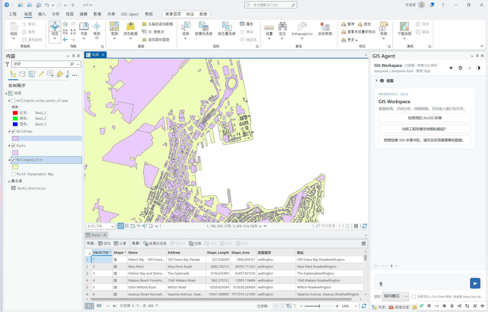
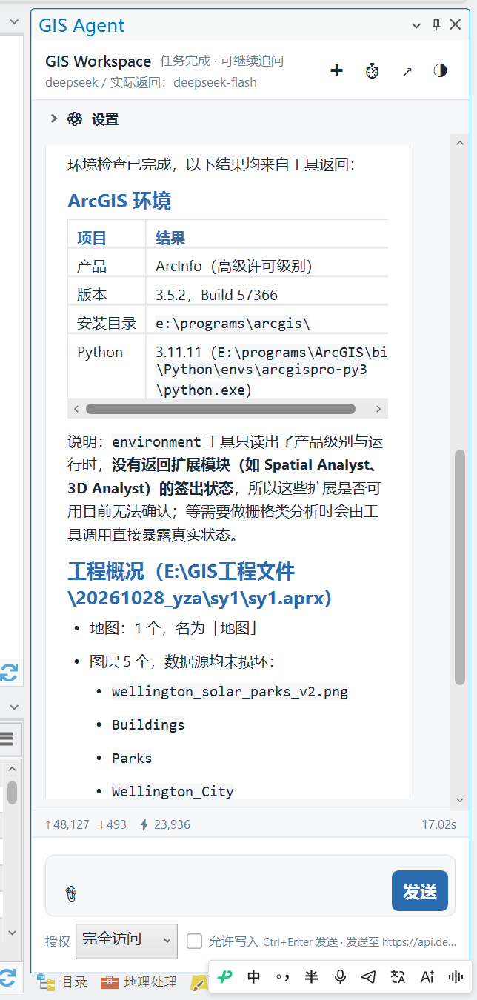
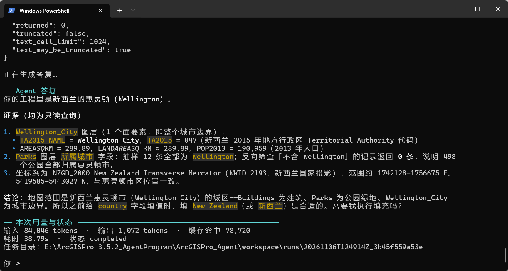
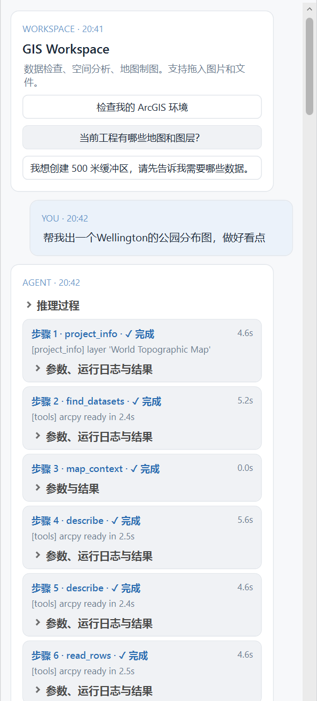
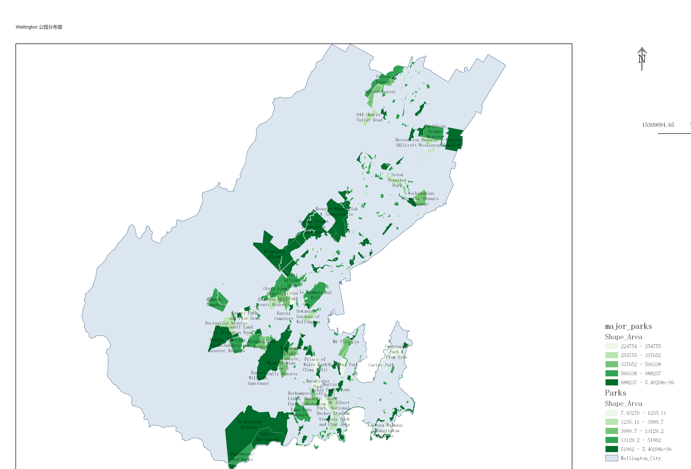
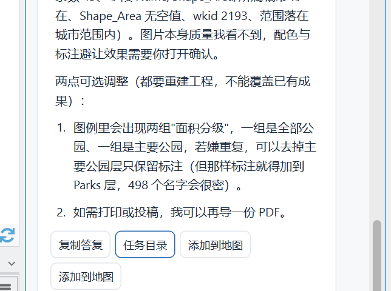

ArcGIS Pro 3.5.2 · Windows · 本地运行 · MIT
在 Pro 停靠面板或 PowerShell 里说一句话，数据检查、空间分析、制图出图全程自动规划执行。 模型只负责规划——每一次工具调用（包括只读）都先出示操作、参数与影响，你允许，它才动； 成果落在带唯一 ID 的任务目录里，逐步留痕、随时回溯。


Pro 内嵌面板
“查看当前地图有哪些图层”“把道路生成 500 米缓冲区，再添加到当前地图”——
面板把 当前 Pro 工程作为上下文，授权 map_context 后可读会话中的地图、图层与可见性状态，
add_to_map 把成果直接放回你的地图。
模型推理随 API 流式返回实时显示，顶部统计真实输入 / 输出 / 缓存命中 token 与耗时； 浅色深色一键切换，历史会话可恢复、可导出 Markdown。
PowerShell CLI
.\scripts\agent.ps1 chat 启动对话：思考、工具确认、结果、最终答复与 token 用量分区显示，
答复按终端宽度排版 Markdown。
/resume 恢复历史会话、/memory 查看长期记忆、/providers 切换供应商——
CLI、面板与工具箱共用同一个 Agent、连接配置、工具与任务记录。
agent.ps1 doctor 只读体检 ArcPy、许可证与实际版本。


逐次授权 · 全程留痕
每个工具调用前弹出确认卡片：操作、参数、影响与预计输出一目了然， 可选“允许本次读取 / 允许本次写入 / 拒绝 / 取消任务”。默认焦点在拒绝，10 分钟未答复即停止。
工具失败时，原始错误与提示会反馈给模型有界自纠，重新决策仍要重新授权；
每次任务自动生成唯一目录：workspace/runs/<UTC_唯一ID>/，
events.jsonl 记录请求、授权决定与执行结果，summary.json 汇总最终状态，成果库禁止覆盖已有数据。
454 项离线契约测试 + Pro 真机 ArcPy 冒烟，拒绝路径逐一核验零残留。
制图出图
build_layout + export_layout：分级色彩、唯一值符号化、预设色板、Arcade 标注，
图名、图例、指北针、比例尺一次配齐，导出 PNG / JPEG / PDF / TIFF / SVG。
上图右侧为 Wellington 公园分布图成果：按 Shape_Area 分位数 5 级渲染，
主要公园层叠置标注、Pro 自动避让；出图前对记录数、字段、WKID、范围做结构化验收，
通过才写进答复——配色观感仍由你打开确认。


与数据源属性表同构：一行一个字段，值全部可在仓库 README / docs 中核对。
| 字段 | 内容 | |
|---|---|---|
| 1 | 入口 | ArcGIS Pro 停靠面板（C# / WPF）· agent.ps1 CLI · Python 工具箱 |
| 2 | 工具 | 62 个结构化工具，参数全部类型化校验：缓冲区、裁剪、相交、融合、空间连接、泰森多边形、插值、密度、等高线、水文链、分区统计、字段计算、投影、CSV / GeoJSON / Shapefile 导出…… |
| 3 | 技能包 | 7 个多步方法模板：水文链、适宜性选址、数据质量检查、插值成图、坐标统一叠合、表格转密度图、副本编辑交付 |
| 4 | 模型 | DeepSeek · Qwen · Kimi · GLM · OpenAI · Claude · Grok · 自定义兼容接口 / 中转站；思考程度与模型列表可管理 |
| 5 | 授权 | 默认 ask 逐次询问（含只读），写入需声明并单次许可；可选 full 自动允许，仍保留白名单、校验与留痕 |
| 6 | 留痕 | workspace/runs/<UTC_唯一ID>/：events.jsonl · summary.json · 成果 GDB / TIFF，禁止覆盖，全程可回溯 |
| 7 | 记忆 | 长期记忆（常用数据目录、坐标系习惯、交付偏好）自动注入新会话；find_datasets 在配置的数据根目录内自主找数据，不反问路径 |
| 8 | 依赖 | 核心纯 Python，无第三方依赖，不向 Esri 基础环境装包；离线测试仅需系统 Python ≥ 3.11 |